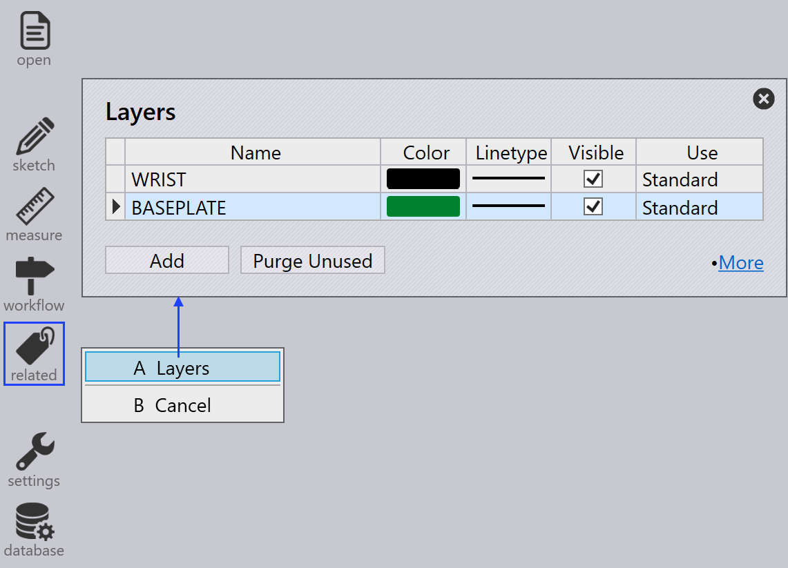
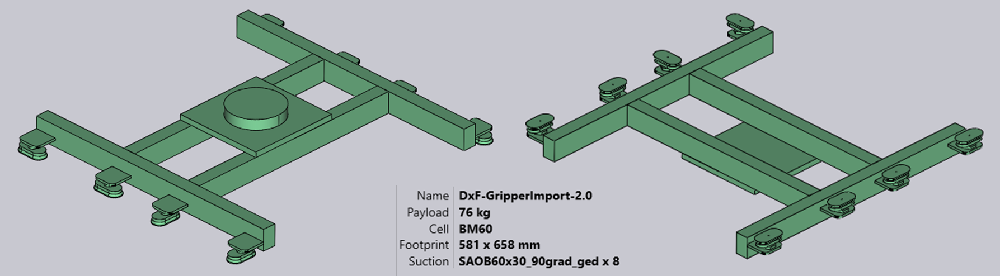

Εισαγωγή λαβίδας από DXF
Μια λαβίδα αναρρόφησης κενού για τις μηχανές BendMaster μπορεί να εισαχθεί από ένα αρχείο DXF. Το αρχείο DXF αντιπροσωπεύει την κορυφαία όψη της λαβίδας (κορυφαία όψη σημαίνει από τις βεντούζες αναρρόφησης, ΌΧΙ από το BendMaster). Οι οντότητες POLYLINE στο αρχείο DXF παρέχουν το σχήμα της πλάκας λαβίδας και οι οντότητες TEXT παρέχουν πρόσθετες πληροφορίες σχετικά με τη λαβίδα (όπως το όνομά της, το πάχος και την τοποθέτηση βεντουζών).
Τα αρχεία στην απαιτούμενη μορφή (DXF, ARV ή GEO) μπορούν να εισαχθούν στη Βάση Δεδομένων Κάμψης.
Για να εισαγάγετε μια λαβίδα:
-
Ανοίξτε τη Database μέσα στο TecZone Bend.
-
Επιλέξτε την επιλογή Bend Grippers από τη λίστα.
-
Κάντε κλικ στην επιλογή Import… και επιλέξτε μια λαβίδα ως αρχείο DXF από τον κατάλογο.

Ακολουθεί ο τρόπος με τον οποίο φαίνεται αυτή η λαβίδα μετά την εισαγωγή (εμφανίζεται σε δύο όψεις από κάτω και από πάνω).


Βασική λαβίδα
Δείτε το απλό σχέδιο που φαίνεται παρακάτω, το οποίο ορίζει μια λαβίδα και μπορεί να αποθηκευτεί ως αρχείο DXF για να εισαχθεί πίσω μέσα στο Απόθεμα λαβίδων.

Ακολουθούν ορισμένα σημαντικά σημεία σχετικά με τον τρόπο σχεδίασης του DXF:
-
Η αρχή του σχεδίου (0,0) αντιστοιχεί στο κέντρο του καρπού του ρομπότ. Μπορείτε να δείτε αυτό αντιπροσωπευμένο από ένα σημείο και έναν κύκλο στο σχήμα. (Τόσο το σημείο όσο και ο κύκλος δεν είναι πραγματικά απαραίτητα για την εισαγωγή λαβίδας, καθώς το κέντρο λαβίδας είναι πάντα υπονοούμενα στην αρχή).
-
Αυτό το σχέδιο έχει επίσης ορισμένες οντότητες POINT που αντιπροσωπεύουν καθεμία από τις θέσεις βεντουζών αναρρόφησης. Και πάλι, αυτά χρησιμεύουν κυρίως για να κάνουν το σχέδιο πιο σαφές και δεν χρησιμοποιούνται πραγματικά από τον εισαγωγέα λαβίδων (οι θέσεις βεντουζών καθορίζονται από οντότητες κειμένου).
-
Το πραγματικό σχήμα της πλάκας σχεδιάζεται ως κλειστές οντότητες POLYLINE. Εάν έχετε άλλες πολυγραμμές μέσα στην εξωτερική, γίνονται οπές στην πλάκα.


Λαβίδα δύο επιπέδων
Ελαφρώς πιο περίπλοκες λαβίδες μπορούν να μοντελοποιηθούν χρησιμοποιώντας ένα ξεχωριστό επίπεδο BASEPLATE. Δημιουργήστε ένα επίπεδο με το όνομα BASEPLATE στο αρχείο DXF, και σχεδιάστε μερικά κλειστά σχήματα POLYLINE σε αυτό το επίπεδο. Στη συνέχεια, αυτό το επίπεδο μπορεί να έχει ξεχωριστά όρια εξώθησης Z που καθορίζονται από το κλειδί BASEPLATEEXTENT. Τα εργαλεία που χρειάζονται για τη δημιουργία και επεξεργασία επιπέδων προστίθενται τώρα.
-
Κάντε κλικ στο Related όταν ένα σχέδιο επεξεργάζεται.
-
Επιλέξτε το μενού Layers για να προσθέσετε νέα επίπεδα, να τα μετονομάσετε, να ορίσετε χρώματα και να αλλάξετε στυλ γραμμών.

-
Στο σχέδιο, κάνοντας κλικ σε μια οντότητα σας επιτρέπει να αλλάξετε το επίπεδο αυτής της οντότητας.

Το επίπεδο εμφανίζεται στον πίνακα οντοτήτων μόνο εάν υπάρχουν πολλαπλά επίπεδα στο σχέδιο. -
Μετά την επεξεργασία του σχεδίου χρησιμοποιώντας αυτά τα εργαλεία, αποθηκεύστε το σχέδιο σε μορφή DXF. Ακολουθεί ένα DXF σχεδιασμένο χρησιμοποιώντας ένα τέτοιο επίπεδο BASEPLATE (εμφανίζεται πράσινο στην εικόνα).

Για αυτή τη λαβίδα, ο καρπός εκτείνεται από Z=0 έως Z=23. Στη συνέχεια, η βασική πλάκα (πράσινη) εκτείνεται από Z=23 έως Z=40, όπως υποδεικνύεται από το κλειδί BASEPLATEEXTENT. Τέλος, η πραγματική πλάκα λαβίδας (που κρατά τις βεντούζες) εκτείνεται από Z=40 έως Z=63, όπως υποδεικνύεται από το κλειδί PLATEEXTENT. Η πλάκα λαβίδας έχει επίσης ορισμένες εξαγωνικές οπές σε αυτήν. Όταν εισαχθεί, αυτή η λαβίδα μοιάζει με την παρακάτω εικόνα:

Λαβίδα πολλών επιπέδων
Οι Λαβίδες Πολλών Επιπέδων είναι μια ενημερωμένη έκδοση της Λαβίδας Δύο Επιπέδων στην οποία περισσότερα από δύο επίπεδα μπορούν να δημιουργηθούν και να εισαχθούν χρησιμοποιώντας το TecZone Bend. Για να χρησιμοποιήσετε μια λαβίδα πολλών επιπέδων, το DXF θα πρέπει να περιλαμβάνει το κείμενο VERSION = 2. Ένα δείγμα λαβίδας πολλών επιπέδων φαίνεται παρακάτω:

Κάθε επίπεδο πρέπει να οριστεί με τις εκτάσεις του όπως LAYER_1 = 23 : 35. Οι οντότητες σε αυτό το επίπεδο θα προστεθούν σε αυτές τις εκτάσεις. Ομοίως, οι βεντούζες ορίζονται στη μορφή, CupNo = X pos, Y pos, [Cup type, Mounting height, Cup group].
| Οι θέσεις X και Y είναι υποχρεωτικές. |
Διαφορετικοί πιθανοί ορισμοί για βεντούζες εξηγούνται παρακάτω:
CupNo = X pos, Y pos με το όνομα της βεντούζας καθορισμένο στο CUPNAME όπως στην προηγούμενη έκδοση
CupNo = X pos, Y pos, Cup type, όπου κάθε τύπος βεντούζας ορίζεται ξεχωριστά (για οβάλ
βεντούζες, τα ονόματα διαφέρουν ανάλογα με τη γωνία)
CupNo = X pos, Y pos, Cup type, Mounting Height
CupNo = X pos, Y pos, Cup type, Mounting Height, Cup Group
CUP1 = 275, 314, SAOB60x30_90grad_ged, 72, 2
Εάν δεν καθοριστεί το ύψος τοποθέτησης, η μέγιστη έκταση πλάκας λαμβάνεται υπόψη από προεπιλογή. Ομοίως, η ομάδα βεντούζας θα οριστεί σε 1, εάν δεν οριστεί.
| Προς το παρόν, το TecZone Bend δεν υποστηρίζει διαφορετικά ύψη τοποθέτησης για τις βεντούζες. |
Όταν εισαχθεί, ένα δείγμα λαβίδας μοιάζει με την παρακάτω εικόνα:


Λαβίδα πολλών κυκλωμάτων
Μπορείτε να δημιουργήσετε μια λαβίδα πολλών κυκλωμάτων (μια λαβίδα που έχει πολλά ανεξάρτητα κυκλώματα κενού αέρα). Για μια τέτοια λαβίδα, σε κάθε βεντούζα ανατίθεται ένας μη μηδενικός αριθμός ομάδας.
Αναθέστε ομάδες βεντουζών χρησιμοποιώντας μια ειδική μορφή για CUP1POS, CUP2POS, κ.λπ. όπως φαίνεται παρακάτω:
CUP1POS = 340,120 #6
CUP2POS = 420,140 #8
Η τιμή μετά το # είναι ο αριθμός ομάδας αναρρόφησης για τη βεντούζα. Σε αυτό το παράδειγμα, η Βεντούζα 1 ανατίθεται στην ομάδα αναρρόφησης 6, η Βεντούζα 2 ανατίθεται στην ομάδα αναρρόφησης 8, και ούτω καθεξής.
Για να διαμορφωθεί σωστά μια λαβίδα πολλών κυκλωμάτων, κάθε βεντούζα πρέπει να ανατεθεί σε έναν αριθμό ομάδας αναρρόφησης με αυτόν τον τρόπο.
| Ο μέγιστος αριθμός βεντουζών που μπορούν να χρησιμοποιηθούν σε μια λαβίδα είναι περιορισμένος στα 100. Εάν εισαγάγετε μια λαβίδα με περισσότερες από 100 βεντούζες, το TecZone θα εμφανίσει ένα μήνυμα σφάλματος αποτυχίας εισαγωγής. |
Η παρακάτω εικόνα δείχνει μερικές δείγμα λαβίδες μέσα στη βάση δεδομένων Bend Grippers κάμψης.